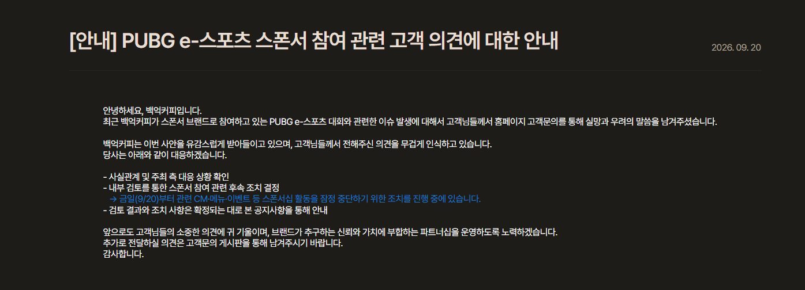
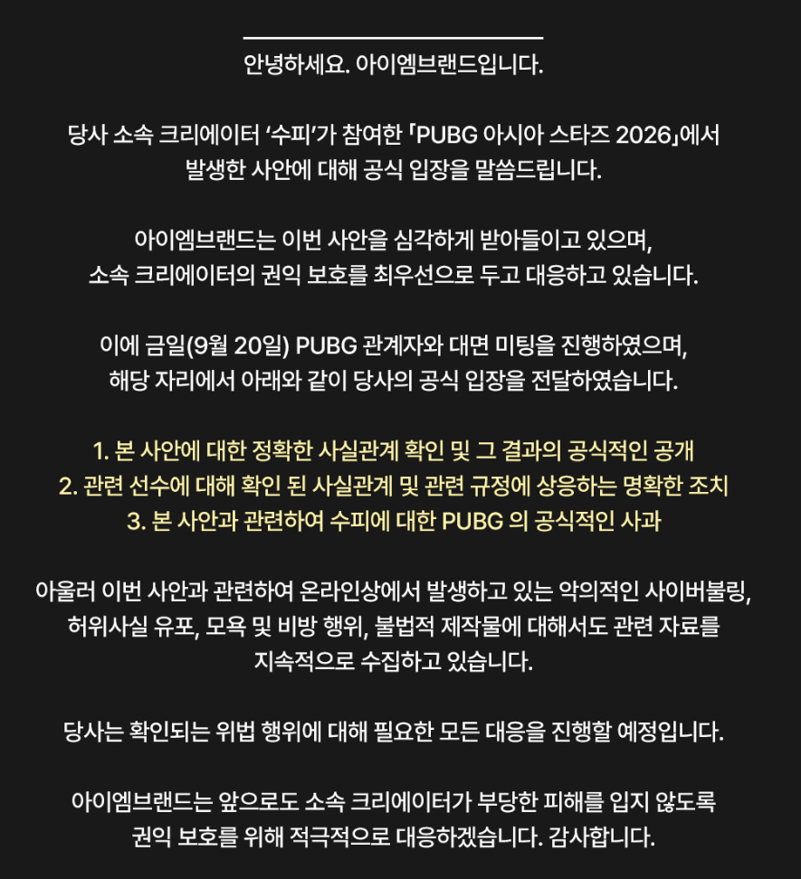

백억커피 빠른 스폰서철회로 반사이익
황회장의 1지명 깐부치킨 도 잠정보류로 후다닥 퇴각

스윗베트남한테 테러당한 스트리머 소속사 극대노해서 자료따는중이고 그걸 사용할수있다고 올림
베트남그라운드 스폰서들한테 런각 잡히고 혼자 뒤집어 쓰게생겼으니 대회자체도 3일차에 사전공지없이 폭파됨
한줄요약 : 크래프톤 주식댓글도 말그대로 개판이 되버렸고 이게 3일만에 벌어짐. 기획자 누군지 몰라도 명절전에 참 따듯해질듯함
ㅋㅋㅋ 기획자가 왜 터짐 다 상부에서 지시한걸텐데